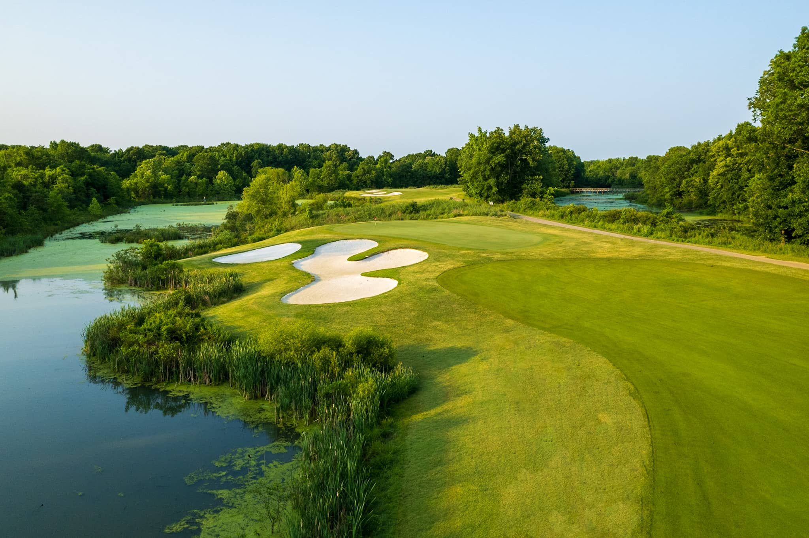

Nashboro Golf Club has been a fixture in the Nashville golf community since it opened on July 4, 1975. Located just five miles south of Nashville International Airport and ten miles from downtown, it occupies a middle ground that few public courses manage to hold for long: genuinely challenging, consistently well-conditioned, and priced well below what comparable courses charge. For the many local golfers who call Nashboro their home course, that combination — fast Mini Verde greens, Bermuda fairways, a layout that demands accuracy, and rates in the $55–$70 range — is exactly what they're looking for on any given weekend.
The course was designed by Benjamin J. Wihry, a member of the American Society of Golf Course Architects, and his routing through the wooded terrain southeast of Nashville remains the heart of what makes Nashboro work. The par-72 championship layout stretches to 6,887 yards from the back tees with a course rating of 74.0 and slope of 132 — numbers that confirm what players discover quickly: this course is more demanding than its daily-fee pricing might suggest. Four tee sets range from 5,485 to 6,887 yards, making it accessible for players at all skill levels without softening the challenge for those playing from the tips.
Wihry's routing carves through wooded terrain with mature tree-lined fairways forming tight corridors on most holes — accuracy off the tee matters here more than distance. Several back tee boxes sit inside narrow chutes before the fairway opens up, and a handful of holes feature meaningful elevation changes that make Nashboro more three-dimensional than a flat parkland course. Almost all of the par 4s and par 5s are doglegs, bending in both directions with notable grade changes that reward local knowledge. Water comes into play on only two holes, but small creeks wind through the property and add strategic interest without turning the course into a water-ball grind.
The greens are consistently Nashboro's most praised feature. The Mini Verde putting surfaces run fast and true — particularly when the club is preparing for a tournament — and their large size combined with emphatic back-to-front tilt on several holes makes them genuinely demanding to read and putt. Holes 11 and 16 feature straight uphill approaches that many players navigate on foot rather than by cart. The #1 handicap hole is the 522-yard par-5 fourth, and the longest hole on the course is the 525-yard par-5 seventeenth. The shortest hole is the third, a par 3 playing 186 yards from the tips.
Every Tuesday, Nashboro sets aside complimentary green fees for all active and retired military, police officers, and firefighters — Heroes' Tuesday. Heroes play free with payment of cart fees only. Five reserved parking spaces near the clubhouse entrance are designated for Heroes throughout the week. It is one of the more meaningful community gestures in Nashville public golf and worth knowing about if you or someone in your group qualifies.
Nashboro offers indoor golf simulator sessions year-round, a relatively uncommon amenity for a daily-fee public course. The simulators are available for practice, casual rounds, and lessons, and can be booked through the club's website. They make Nashboro a legitimate year-round golf destination regardless of weather — a real advantage during Nashville's winter months.
All rates include cart fees and taxes. For 18 holes Monday through Thursday, morning rounds (6:30 AM – 1:29 PM) are $55 and afternoon rounds (1:30 – 3:00 PM) drop to $50. Seniors aged 55 and over play for $40 any time Monday through Thursday. Friday through Sunday, 18-hole rates are $70 in the morning and $65 in the afternoon. Nine-hole rates are $30 Monday through Thursday and $40 on Friday through Sunday after noon. The club has a strict no-show policy — cancellations must be made at least 24 hours in advance by calling the pro shop at (615) 367-2311. Email replies to confirmation messages are not accepted as valid cancellations.
Nashboro offers membership options for golfers who play regularly — contact the pro shop for current membership details and pricing. The Men's Golf Association runs a full calendar of events through the season, mixing competitive and social formats. Head Professional Jeff Page handles MGA invitations directly; call (615) 367-2311 to ask about joining or playing in an upcoming event as a guest.
The clubhouse features a well-stocked pro shop and a full-service bar and grille — the 19th hole that Nashboro regulars linger in after their rounds. A large putting green is available for pre-round warmup and doubles as a chipping area. Lessons are available through the instruction staff; details are on the club's website. Gift certificates can be purchased online. The club's E-Club mailing list offers members advance notice of specials and events.
Nashboro Golf Club is located at 1101 Nashboro Boulevard, Nashville, TN 37217, five miles south of Nashville International Airport. Call (615) 367-2311 to book a tee time or inquire about memberships, events, and simulator availability.